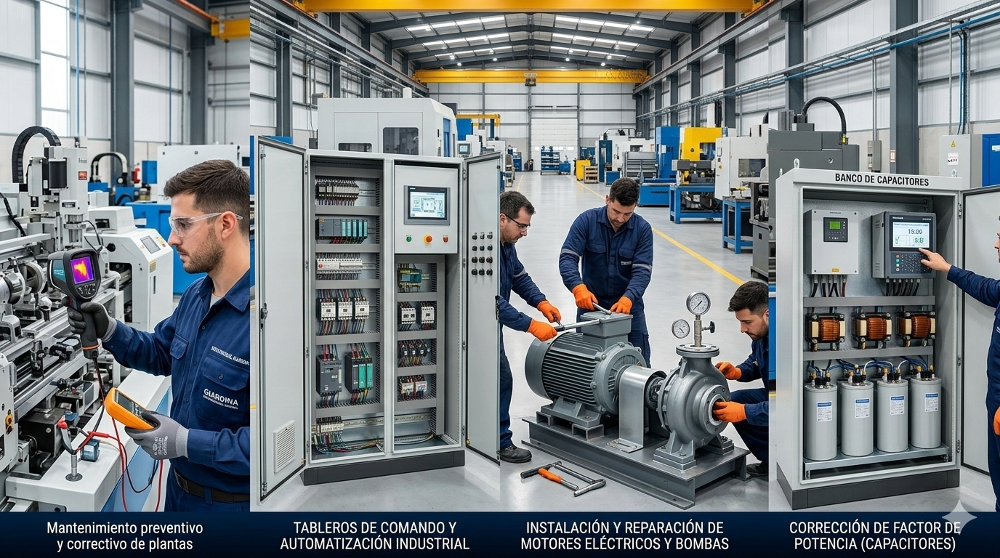

Electricidad Domiciliaria
- Instalaciones eléctricas completas en obras nuevas.
- Recableados y adecuación de viviendas antiguas.
- Armado y reparación de tableros (Térmicas y Disyuntores).
- Iluminación LED y automatización (fotocélulas, sensores).
- Puesta a tierra.
Servicios Industriales

- Mantenimiento preventivo y correctivo de plantas.
- Tableros de comando y automatización industrial.
- Instalación y reparación de motores eléctricos y bombas.
- Corrección de factor de potencia (Capacitores).
Reparaciones y Especialidades

Servicios Técnicos Especializados:
-
Reparación de electrodomésticos Service integral de lavarropas y pequeños artefactos.
-
Mantenimiento de Motores Rodamientos y service preventivo de bombas centrífugas.
-
Tableros Industriales Armado, cableado y automatización de comandos de potencia.
-
Instalaciones Eléctricas Tendido de redes domiciliarias, obras nuevas y reformas.
Contacto
Zona de cobertura: San Miguel de Tucumán y alrededores.
Diego Exequiel Giardina - Técnico Electromecánico
WhatsApp: 381 409 5614